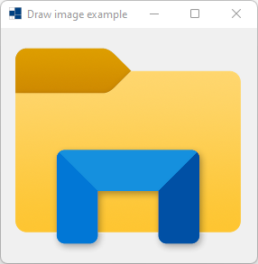
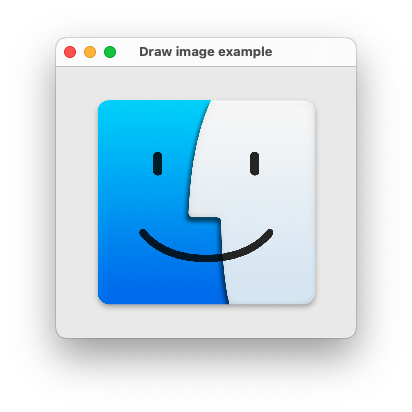
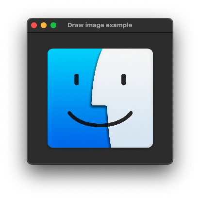
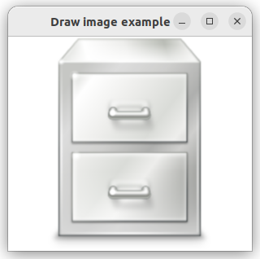
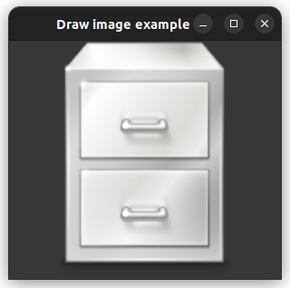

|
xtd
0.2.0
|
Loading...
Searching...
No Matches
draw_image.cpp
shows how to draw image in paint event using xtd::drawing::graphics::draw_image.
- Windows
- 
- macOS
- 

- Gnome
- 

#include <xtd/xtd>
class form_main : public form {
public:
form_main() {
text("Draw image example");
}
protected:
void on_paint(paint_event_args& e) override {
form::on_paint(e);
auto image_size = math::min(e.clip_rectangle().width, e.clip_rectangle().height);
auto image_rect = rectangle((e.clip_rectangle().width - image_size) / 2, (e.clip_rectangle().height - image_size) / 2, image_size, image_size);
e.graphics().draw_image(image, image_rect);
}
private:
xtd::drawing::image image = images::from_name("system-file-manager", xtd::drawing::size {1024, 1024});
};
auto main() -> int {
application::run(form_main());
}
An abstract base class that provides functionality for the bitmap and metafile descended classes.
Definition image.hpp:49
Stores an ordered pair of integers, which specify a height and width.
Definition size.hpp:32
Generated on Sat Nov 1 2025 23:59:07 for xtd by Gammasoft. All rights reserved.